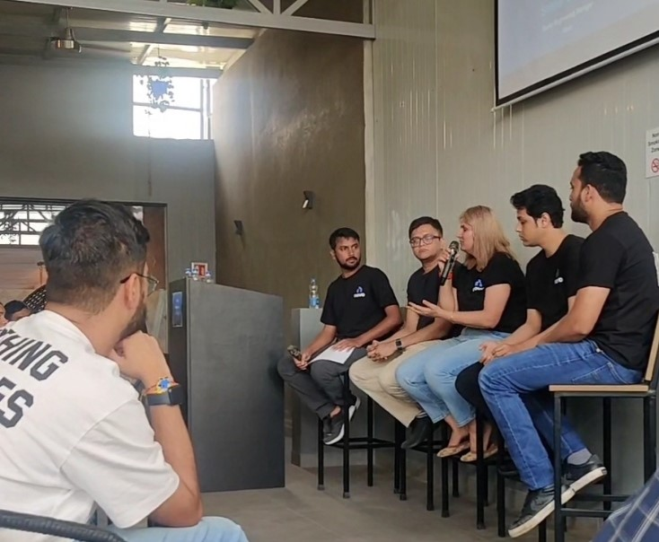

The Future of Finance: Insights from Novo1.0's Fintech Panel
The recent Novo1.0 tech meetup brought together some of the brightest minds in fintech, offering a glimpse into the future of finance and small business banking. The highlight of the event was undoubtedly the fintech panel, led by industry expert Sankar Rao Amburkar, which delved deep into cutting-edge topics such as UPI, blockchain, and digital currencies.
The Rise of UPI
Unified Payments Interface (UPI) has revolutionized digital payments in India, and the panel discussed its potential for global adoption. Sankar Rao Amburkar emphasized the simplicity and efficiency of UPI, stating, "UPI has democratized digital payments in India. Its success offers valuable lessons for other countries looking to streamline their payment systems."
Blockchain: Beyond Cryptocurrencies
The panel explored how blockchain technology is being applied beyond cryptocurrencies. From supply chain management to identity verification, the potential applications seem limitless. One panelist noted, "Blockchain's transparency and immutability make it a game-changer for industries requiring secure, traceable transactions."
The Future of Digital Currencies
With central banks worldwide exploring the possibility of issuing digital currencies, the panel discussed the implications for traditional banking and monetary policy. "Central Bank Digital Currencies (CBDCs) could redefine the role of central banks and how monetary policy is implemented," explained a panelist from a leading financial institution.
Impact on Small Business Banking
The panel concluded by discussing how these technological advancements could benefit small businesses. From faster, cheaper international transactions to more accessible financing options, the future looks bright for small business banking. Sankar Rao Amburkar summarized, "Technology is leveling the playing field. Small businesses will have access to financial tools and services previously reserved for large corporations."